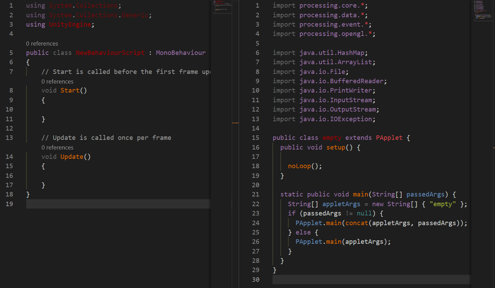

class: center, middle .title[Creative Coding and Software Design 2] <br/><br/> .subtitle[Week 2: From Processing to Unity] <br/><br/><br/><br/><br/><br/> .date[Feb 2021] <br/><br/><br/> .note[Created with [Liminal](https://github.com/jonathanlilly/liminal) using [Remark.js](http://remarkjs.com/) + [Markdown](https://github.com/adam-p/markdown-here/wiki/Markdown-Cheatsheet) + [KaTeX](https://katex.org)] ??? Author: Grigore Burloiu, UNATC --- name: toc class: left # ★ Table of Contents ★ <!-- omit in toc --> 1. [Setting up](#setting-up) 2. [C# and Java](#c-and-java) 3. [Mini-game from scratch](#mini-game-from-scratch) 4. [Assignment](#assignment) <!-- Comment out the next slide if you don't want the Table of Contents link --> --- layout: true .toc[[★](#toc)] --- name: setting-up # Setting up [Get Unity](https://unity3d.com/get-unity/download) Visual Studio - [Community](https://visualstudio.microsoft.com/vs/unity-tools/) - [officially recommended IDE](https://youtu.be/KH0nqTpOVuM) - [installation](https://youtu.be/nna58aKumJ8) - [Code](https://code.visualstudio.com/docs/other/unity) - lightweight - [open source](https://github.com/microsoft/vscode)-based other editors work too, e.g. [Sublime Text](http://wiki.unity3d.com/index.php/Using_Sublime_Text_as_a_script_editor) --- name: c-and-java class: center # C# and Java <p></p> --- ## Unity and Processing p5: write p5-flavour Java - subset of a Java *applet* class - run by JVM Unity: write C# - API → C++ - compile to native machine code --- name: mini-game-from-scratch # Mini-game from scratch <iframe src="https://openprocessing.org/sketch/998046/embed/" width="100%" height="400"></iframe> --- ## GameObjects and Sprites create gameobjects create sprites place in screen --- ## Camera move camera to 10 -5 .ViewportToWorldPoint(new Vector3(1, 1, camera.nearClipPlane)); --- ## Unity-fying our code https://docs.unity3d.com/ScriptReference/Vector2.Lerp.html https://docs.unity3d.com/ScriptReference/Vector2.MoveTowards.html https://docs.unity3d.com/Manual/CollidersOverview.html --- name: assignment class: left # Assignment Refactor the project using: - GameObject-connected scripts - Colliders - as many Unity-specific helpers as you find useful